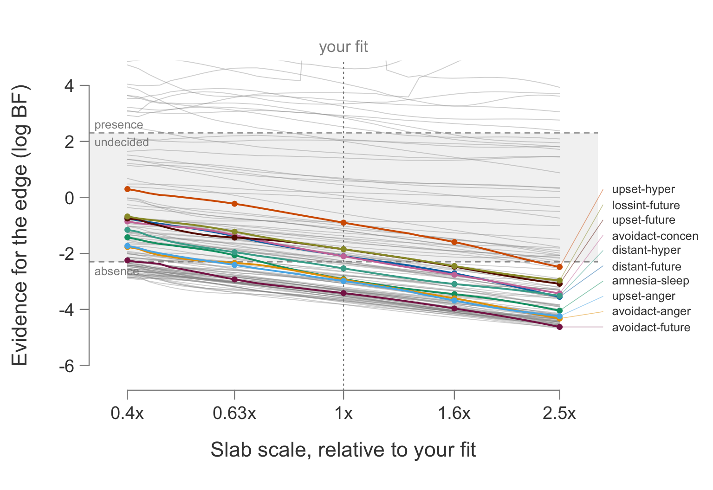

library(bgms)
fit = bgm(Wenchuan, iter = 1e4, warmup = 5e3, seed = 123)
ps = prior_sensitivity_check(fit, seed = 123)prior_sensitivity_check()
Recovers each edge’s inclusion Bayes factor curve across the interaction slab scale and classifies which edge verdicts depend on that choice.
Description
prior_sensitivity_check() takes a fitted bgm() object with edge selection and recovers, for every edge, the continuous curve of the inclusion Bayes factor as a function of the interaction (pairwise) slab scale \(s\). It then labels each edge by how its verdict behaves along that curve.
The curve is anchored at a handful of fixed-scale fits and filled in between anchors by importance reweighting. The 1x anchor is the original fit and is never refit, so the chosen-scale verdicts the check reports are exactly the analysis you already ran. A noise band, calibrated from a repeated refit at one anchor, keeps boundary edges that merely flip between reruns of the same prior from being reported as prior sensitivity.
The check builds the curve from a handful of warm-started anchor fits, reweighting between neighboring anchors. The reweighting itself is the posterior-density-ratio identity of Bartoš et al. (2026), applied locally around each refit anchor; the anchored construction is bgms’s own. What the check deliberately does not use is that paper’s single-fit shortcut, which recovers the whole curve by reweighting one fit: on graphical models the scale posterior is too narrow for a single fit to cover the band.
For why the slab scale matters for edge verdicts at all, see Prior Basics and Edge Selection.
Usage
prior_sensitivity_check(
bgms_object,
anchors = c(0.4, 0.63, 1, 1.6, 2.5),
evidence_threshold = 10,
vary = c("auto", "slab", "slab-and-diagonal"),
refit_sampler = "same-as-fit",
iter = NULL,
warmup = NULL,
tolerance = 0.5 * log(10),
ess_floor = 400,
include_preferred_scale = FALSE,
cores = NULL,
seed = 1L,
keep_fits = FALSE,
verbose = FALSE
)The result has print() and plot() methods:
print(x, max_rows = 10L, ...)
plot(x, max_labels = 10L, ...)Arguments
| Argument | Description |
|---|---|
bgms_object |
A fitted bgms object from bgm(), run with edge_selection = TRUE. |
anchors |
Numeric vector of positive anchor multipliers of the chosen scale. Default c(0.4, 0.63, 1, 1.6, 2.5), log-spaced so that adjacent anchors’ usable reweighting radii overlap. The multiplier 1 is always included and is the original fit; every other anchor costs one warm refit. |
evidence_threshold |
Positive numeric. Inclusion Bayes factor threshold for a presence verdict; 1 / evidence_threshold is the absence threshold. Default: 10. |
vary |
What the sweep moves, for models that also have a prior on the precision diagonal (continuous and mixed); ignored for discrete models, which have none. The slab scale \(s\) and the diagonal rate are tied through the standardized frame (raw rate \(= \eta / s\)), so a sweep of \(s\) has to hold one of the two fixed. "slab" holds the raw diagonal rate at its fitted value and moves the interaction prior alone, answering how much the verdicts depend on how wide an edge is allowed to be. "slab-and-diagonal" holds \(\eta\) fixed and lets the raw rate follow, answering how much they depend on the overall prior scale with its shape held fixed. "auto" (default) follows the frame the fit itself used: "slab-and-diagonal" when the diagonal prior was given as eta, "slab" when it was given as a raw rate. The resolved mode is named in the printed report. |
refit_sampler |
"same-as-fit" (default; inherit the original fit’s update method), or an explicit "nuts", "adaptive-metropolis", or "gibbs". NUTS refits of an ordinal fit carry the adapted metric and run fastest; when an inherited slower sampler makes the check cost more than about a minute, a message suggests the switch. |
iter, warmup |
Integer sampling and warmup iterations per refit, or NULL (default) to use the validated short schedule for warm NUTS refits and to inherit the original fit’s schedule otherwise. |
tolerance |
Numeric. Minimum change in natural log Bayes factor across scales for a verdict flip to count as a move, before the MCSE and noise floors. Default: 0.5 * log(10), about 1.15. |
ess_floor |
Positive numeric. Minimum pooled importance effective sample size for a curve point to be reported; points below it are NA. Default: 400. |
include_preferred_scale |
Logical. Add an extra anchor at the data-preferred scale \(\hat{s}\). Default: FALSE. |
cores |
Integer thread count for each refit’s chains. Default: the original fit’s core count. |
seed |
Integer base seed for the refits. Default: 1. |
keep_fits |
Logical. Retain the full refit objects in $fits; the default keeps only the per-scale summaries. Default: FALSE. |
verbose |
Logical. If TRUE, print each internal refit’s raw sampler notes live as it runs. Default: FALSE. |
x |
A bgms_prior_sensitivity object (print() and plot()). |
max_rows |
Integer. Maximum edges to name in the printed scale-dependent table; the rest are counted and left to $edges. Default: 10. |
max_labels |
Integer. Maximum scale-dependent edges to color and label by name in the plot; the rest are counted in a corner note. Default: 10. |
Value
An object of class "bgms_prior_sensitivity": a list with the following components. print() returns x invisibly; plot() returns x invisibly and is called for the side effect of drawing.
| Component | Contents |
|---|---|
edges |
Data frame, one row per edge: edge, prior_inclusion_probability, the chosen-scale quantities (chosen_scale_pip, chosen_scale_log_bf, chosen_scale_mcse, chosen_scale_verdict), the dense-grid stability range (stability_lower, stability_upper), the mover category, insufficient with its two subcauses insufficient_noisy and insufficient_disagree, saturated, and one verdict_x<multiplier> column per anchor. |
grid |
Data frame, one row per anchor fit plus the replicate: multiplier, scale, replicate, original_fit, usable, the convergence numbers behind the gate (rhat_continuous, the median across continuous parameters, alongside rhat_continuous_max, ess_continuous, inclusion_ess_min, rb_median_rhat, warmup_incomplete), sampler_notes, and seconds. |
anchors, replicate_anchor |
The anchor multipliers, and the anchor that was refit twice to measure the noise band. |
multipliers, scales, anchor_index, chosen_index |
The dense display grid (43 points by default), in multipliers and in absolute scale, plus the grid positions of the anchors and of the chosen scale. |
log_bf, log_bf_mcse, verdict |
Grid-by-edge matrices holding the curve, its Monte Carlo standard error, and the verdict at each point, on the natural log Bayes-factor scale that the rest of the package uses. NA where the point was masked. |
unit, vary |
What the curve varies and in what units: the varied prior quantity, the scale it is measured on, and the plain-language question the check answers. |
anchor_verdict |
Anchor-by-edge character matrix of the verdicts read straight from the anchor fits. |
curve |
Curve bookkeeping: per-point importance ess, the dominant anchor_used at each point, the ess_floor in force, and per-point chain unanimousity. |
wobble |
The run-to-run noise yardstick: q95, median, per_edge, and the anchor it was measured at. |
preferred_scale |
The data-preferred slab scale: s_hat with interval lo, hi, plus log_sd and the number of included edges m it was estimated from. |
refit_diagnostics |
The captured raw sampler notes per anchor and for the replicate; a character vector per entry, empty when a refit was quiet. |
fits |
The full refit objects when keep_fits = TRUE, otherwise NULL. |
evidence_threshold, tolerance, refit_sampler, warm, model_type, runtime_seconds, chosen_scale, edge_names |
The settings used and the measured cost. |
Verdicts take the values "presence", "undecided", and "absence". The mover column takes the values "stable", "indistinguishable-from-wobble", and "moved-beyond-wobble".
Details
The anchored curve
The model is refit at each non-unit anchor. A fit at fixed anchor scale \(s_a\) is reweighted to a nearby scale \(s\) with per-draw slab-density ratios over the currently included edges; the likelihood cancels, so no refit is needed between anchors. Each point of the dense log-spaced display grid pools every anchor that clears ess_floor there, weighting each anchor’s inclusion-probability estimate by its inverse variance. The pooling happens on the inclusion-probability scale and is then transformed to the natural log Bayes factor, which keeps the curve continuous across anchor hand-offs and finite at capped edges. Points where no anchor clears the floor are NA rather than extrapolated, and non-overlapping anchor radii trigger a warning to add anchors.
Exactness is kept off the pooled curve and on the anchor fits themselves: the per-anchor verdict columns and every chosen-scale quantity are read straight from each fit’s own Rao-Blackwellized statistics, so the 1x column is exactly the original fit’s reported analysis.
Warm starts and cost
For ordinal (OMRF) fits each refit starts from the original fit’s per-chain final state, and a NUTS refit additionally carries the adapted step size and diagonal mass matrix, so a short warmup suffices and the whole check costs about one original fit. Continuous (GGM) and mixed-MRF fits refit cold with full warmup, costing about one fit per scale.
Because the warm starts sit near the chosen-scale posterior, cross-chain dispersion is reduced by construction, which weakens split-\(\hat{R}\) as a between-chain diagnostic. The refit gate therefore does not read \(\hat{R}\) alone: an anchor is usable when the median split-\(\hat{R}\) over the continuous parameters and over the Rao-Blackwellized inclusion probabilities both clear 1.01 and the NUTS energy diagnostics pass. The smallest Rao-Blackwellized inclusion n_eff is reported per anchor as inclusion_ess_min but does not gate; the per-chain agreement that guards an individual verdict is the edge-level sufficiency check below.
The mover rule
An edge is flagged scale-sensitive only if its verdict differs somewhere along the curve and its natural log Bayes-factor change across scales exceeds max(tolerance, 2 * MCSE, noise). The per-point MCSE comes from the chain-level spread of the reweighted estimate, so it carries both the between-chain and the importance-sampling uncertainty. The noise band is the 95th percentile of the spread between one anchor refit and its repeat, over threshold-relevant edges (\(|\log \text{BF}| \le 3\log 10 \approx 6.91\); near-saturated edges would inflate it). A bare verdict flip inside the replicate noise is never reported as a move.
Edge-level sufficiency
An edge whose per-chain verdicts disagree, or whose between-chain-inflated natural log Bayes factor band straddles a verdict threshold, is marked insufficient at that scale: the refit cannot certify its verdict. This errs toward caution, because disagreement widens the band rather than vanishing into a pooled estimate. The printed report calls these edges “not certifiable”.
Convergence gates and captured sampler notes
Each refit passes a refit-level gate before its verdicts enter the curve: the median continuous split-\(\hat{R}\) and the median RB-inclusion \(\hat{R}\) must both be below 1.01, and for NUTS the smallest half-run E-BFMI must exceed 0.3 with the largest energy variance ratio below 2. A refit that fails is reported once, in plain language, and excluded rather than silently pooled; $grid$usable records the outcome per anchor.
Each refit’s own sampler chatter (energy and tree-depth notes, dropped-chain warnings) is captured rather than printed while the check runs: the gate adjudicates it, and the raw text stays available in $refit_diagnostics. Set verbose = TRUE to see those notes live instead.
Examples
Check a bgm() fit of the Wenchuan PTSD data (both the fit and the check were run in advance here):
print() gives the answer first: how many verdicts hold across the whole anchored range, which edges genuinely depend on the scale, which cannot be certified, the verdict counts per scale, and how the chosen scale compares with the size of the estimated interactions. The machinery is confined to the closing block.
psPrior sensitivity check: are the edge verdicts robust to the slab scale?
Bayes-factor curve from 0.4x to 2.5x the chosen scale (anchors at 0.4x, 0.63x,
1x, 1.6x, 2.5x; the 1x anchor is the original fit); 136 edges.
91 of 136 verdicts hold across the whole 0.4x-2.5x range; the exceptions are
named below.
robust (same verdict at every scale) 91
changed, within run-to-run noise 6
changed, beyond run-to-run noise 31
not certifiable (too noisy to assess) 8
31 edges' verdicts genuinely depend on the scale:
edge 0.4x 0.63x 1x 1.6x 2.5x
intrusion-lossint undecided absence absence absence absence
intrusion-numb undecided absence absence absence absence
intrusion-sleep undecided undecided undecided undecided absence
flash-upset undecided undecided absence absence absence
flash-avoidth undecided undecided undecided absence absence
flash-sleep undecided undecided absence absence absence
flash-concen presence presence presence undecided undecided
flash-hyper undecided absence absence absence absence
upset-distant undecided undecided undecided undecided absence
upset-numb undecided undecided undecided absence absence
...and 21 more; see $edges.
8 edges are too noisy to assess: intrusion-startle, dreams-numb, flash-startle,
upset-avoidact, upset-concen, avoidth-concen, avoidth-hyper, avoidact-startle.
Their Bayes factor sits within Monte Carlo error of an evidence threshold, or
their chains disagree on the verdict, at the chosen scale itself; a rerun with
a fresh seed could flip them without any prior change. Run more iterations to
settle these verdicts before reading their sensitivity.
Verdict counts by scale (at the anchors):
0.4x 0.63x 1x 1.6x 2.5x
presence 37 36 35 32 32
undecided 62 49 39 31 27
absence 37 51 62 73 77
More absence at wider scales is expected: a wider slab strengthens evidence
against borderline edges.
Note: the chosen scale (1) is much wider than the estimated interactions (about
0.18 [0.148, 0.218]); absence verdicts in particular depend on this choice.
Method: 43-point curve from 5 anchor fits (0.4x to 2.5x the chosen scale),
joined by importance reweighting; the 1x anchor is the original fit.
Points with reweighting effective sample size below 400 are not shown.
Refits: 5 nuts refits, warm-started from the original fit, 123 s total.
Noise: two identical refits at 1.6x differed by up to 0.72 log BF across
threshold-relevant edges; verdict moves smaller than that are reported
as run-to-run noise, not prior sensitivity.
1 edge saturated in one of the two and was left out of that spread.
See ?prior_sensitivity_check for the full construction.plot() draws the same result as curves. Each line is one edge’s natural log inclusion Bayes factor across the anchored scale range, with dots at the anchor scales. The shaded band is the undecided zone between the evidence thresholds. Edges whose verdict depends on the scale are colored and labeled by name; the rest are the muted background. Masked curve points leave visible gaps, and a saturated edge is capped at a large finite value rather than running off the panel: the cap follows from the inclusion-probability clamp and sits at \(\log(10^6)\), about 13.8.
plot(ps)
The per-edge table carries the same information numerically:
head(ps$edges[, c("edge", "chosen_scale_log_bf", "chosen_scale_verdict",
"stability_lower", "stability_upper", "mover")], 6) edge chosen_scale_log_bf chosen_scale_verdict stability_lower
1 intrusion-dreams Inf presence 0.4
2 intrusion-flash 12.1122799 presence 0.4
3 intrusion-upset 0.6810731 undecided 0.4
4 intrusion-physior -1.2840760 undecided 0.4
5 intrusion-avoidth -3.3551742 absence 0.4
6 intrusion-avoidact -3.4935228 absence 0.4
stability_upper mover
1 2.5 stable
2 2.5 stable
3 2.5 stable
4 2.5 stable
5 2.5 stable
6 2.5 stable$grid records what each anchor fit cost and whether it passed its convergence gate:
ps$grid[, c("multiplier", "replicate", "original_fit", "usable",
"rhat_continuous", "seconds")] multiplier replicate original_fit usable rhat_continuous seconds
1 0.40 FALSE FALSE TRUE 1.002550 22.98249
2 0.63 FALSE FALSE TRUE 1.001617 24.49928
3 1.00 FALSE TRUE TRUE 1.000277 0.00000
4 1.60 FALSE FALSE TRUE 1.002826 25.09576
5 2.50 FALSE FALSE TRUE 1.002199 25.81125
6 1.60 TRUE FALSE TRUE 1.002668 25.09772See also
bgm(), extract_posterior_inclusion_probabilities(), extract_inclusion_bf(), Prior Basics, and Edge Selection.
References
Bartoš, F., Wagenmakers, E.-J., Marsman, M., & van den Bergh, D. (2026). Efficient Bayes factor sensitivity analysis. arXiv Preprint.